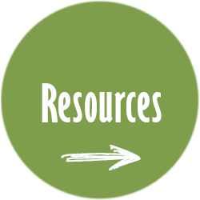

PopeComputer Science
AP Computer Science A
| Home | Intro to Software | APCSP | APCSA | Honors Research |
AP Computer Science A uses modules from CodeHS to teach Java. All work done in class is posted on the course calendars. Links to calendars are posted below. Most calendar links require access to the CodeHS platform and enrollment in the course. Parents can use the calendar to see what was assigned on a given day. Students can access their assignments through the calendar.
The links below will take you to pages that are not course specific. These will allow you to explore other computer science and coding topics.

|

|
 |